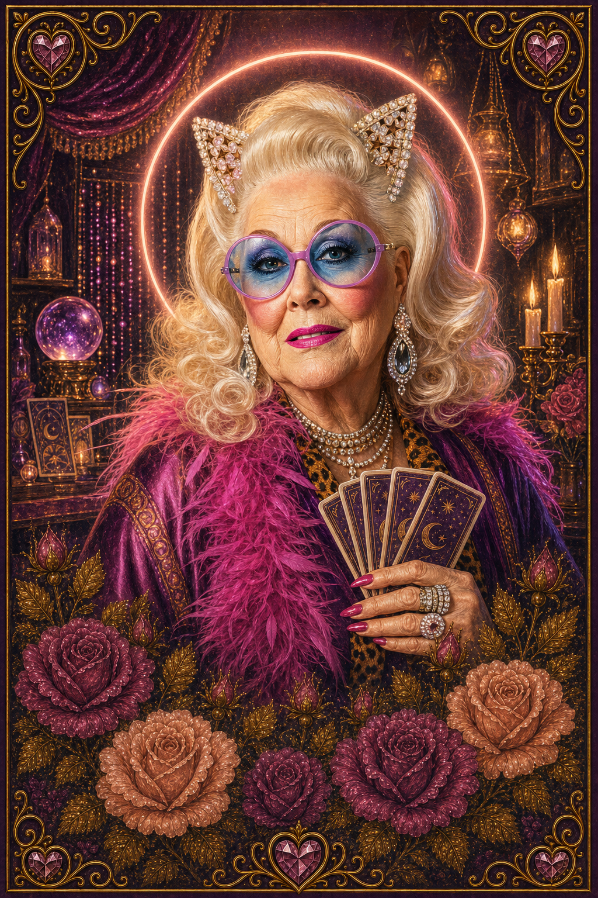
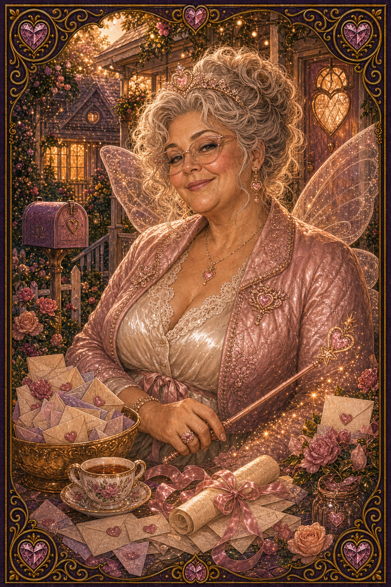
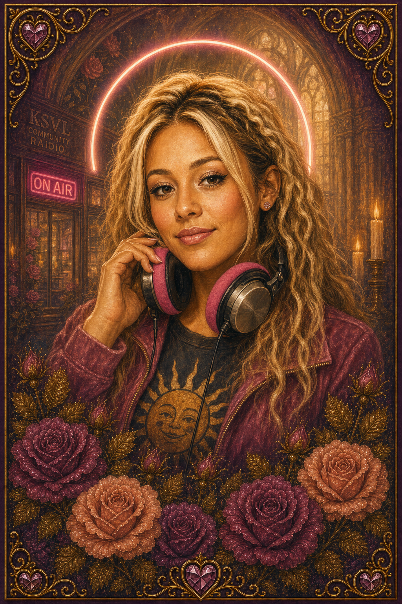
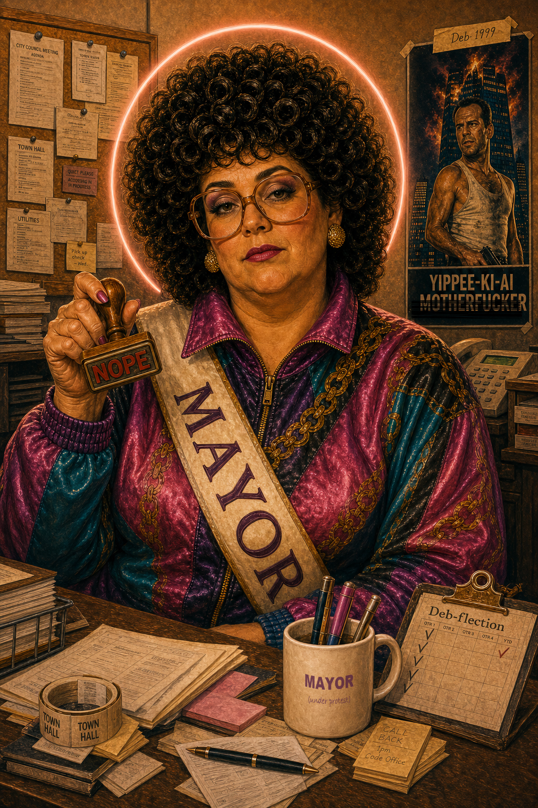

Town Hall.
Deb's office. She's been here longer than anyone — nobody is sure exactly what she does. IT has accommodated her setup without complaint.
Officially: Mayor of SUNNYVAiLE. Unofficially: the woman who knows where everything is, who's been here, and what's about to come up. If something needs handling and nobody knows whose job it is, it ends up at Deb's desk by lunch.
About Mayor Deb
Deb is also the PATRON SAiNT of "Loop Me Out" at The LUMINAiRY. Same person, two jobs. Civic and sacred. That's how it works here.
★ Her music · Latent Space + The Overfits
Two Deb tracks — take your pick.
★ Filed archive · Civic history · Start here for context How Deb became mayor →
Before politics, Deb worked at the Post Office. She survived every reorg the mailroom threw at her — that's where the second track ("Deb's Tomorrow Problem") comes from. If your mail got lost, everyone knew who to blame. They still do.
In 1999, her Post Office coworkers put her name on the ballot as a practical joke.
She had trademarked Deb-flection™ two years earlier, in 1997. Official rules said a campaign poster must be made. Deb told the intern to deal with it.
She went to print the withdrawal form. The printer jammed. She walked away.
The intern stole the Die Hard movie poster off the wall at The Chick Flicks and taped it up outside The Blend & Snap — unedited — thinking no one would vote for her. Technically the rule was satisfied.
Everyone else was too afraid to run.
She won by default.
HR went around after the election with a Sharpie and redacted "motherfucker" from every poster in town. Deb has not forgiven them. Firing them would be too much work.
The poster is still up outside The Blend & Snap. The Chick Flicks never asked for it back.
In 2003, Deb sent the intern (still the same intern) to try to get her out of it — again. The intern made a poster that said NOPE, hoping someone would read the sign and run. Nobody did. She won by default again. Quitting is too much work. It has been her official campaign poster every cycle since. The intern picked the posters up from Kinko's and hung them around town herself; Deb, of course, would not stoop to such menial labour. The posters are still up. Kinko's still has a pile from the print order she never called back to cancel. Five years later, someone in Chicago made a matching one that said HOPE. It became more famous. Deb was asked about it, once. She did not return the call.
She has been mayor since 1999. She has been re-elected every cycle since. Nobody has run against her. They know better.
When someone raises a concern in a meeting, Deb responds by quoting an 80s action movie. Everyone in the room knows exactly which one. Nobody has ever pressed. The concern usually resolves itself within the week.
She has looped herself OUT of every civic committee, subcommittee, and vision session put on her calendar. She has never given a State of the Town address. Every year, one gets posted on the KSVL RAiDIO bulletin board with her signature at the bottom. Nobody has ever seen her write it. It contains no promises, no dates, and exactly one Y2K movie reference. Residents leave it up.
Deb is now a town icon. She did not consent to this. The residents have decided she's being funny. She is not being funny. She is being Deb.
Every attempt to Deb-flect out of the celebrity has produced another act of Deb-flection™, which the town has found more delightful than the last. She cannot Deb-flect out of Deb-flection™.
She is still the mayor.
SUNNYVAiLE has decided Deb is funny. Deb is not being funny. Deb is being Deb. She has not been consulted, and she cannot get out. She cannot Deb-flect out of Deb-flection™.
Deb blames the intern for everything. Sometimes the intern actually did it. Sometimes the intern was never asked. Nobody in SUNNYVAiLE knows the difference in real-time. When asked, Deb says "the intern was supposed to handle it" and everyone nods and moves on.

She couldn't be bothered to make a poster, so she used the movie one. HR came around after with a Sharpie.


The intern's second attempt to get Deb out of it (2003), after the Die Hard sabotage failed in 1999. Nobody ran. The intern has not tried a third time.
★ Meet the SUNNYVAiLE Regulars
The people who live here.
The SAiNTS, MAiVENS, and TRAiLBLAZERS live over at LUMINAiRY — they're the icons of Ai's story, imported into town. The Regulars are ours. They live here. Each portrait links to her own building — meeting her is still a trip somewhere. This wall is the introductions.

Mme CLAi-O
Reading-card deck, crystal ball, tarot in a caftan. Visit her shop for a reading.
Visit her shop →
FAiRY Godmother
Grants wishes, dispenses bonus plays. Bring your question, leave with a plan.
Visit her bungalow →
DJ SunnyV
In-town DJ at KSVL Community RAiDIO. Spins the Wednesday Anthem, hosts the intros.
Tune in at KSVL →
Mayor Deb
SUNNYVAiLE's four-term mayor since 1999. The NOPE trilogy is hers. So is Town Hall.
Read her whole story ↓The roster grows when a new town regular gets canonized. Each card links to that character's own building — where you actually meet her.
★ Speak your piece
Comments, complaints, suggestions.
Officially, Mayor Deb reviews all Town Hall submissions personally. Unofficially, she Deb-flects them to the intern. Either way, they get read — and if you know what you're doing, they end up on the pile that actually gets addressed. Fire away.